新海誠風アニメ／創業60年 × 若手オーナーの技術／約45秒
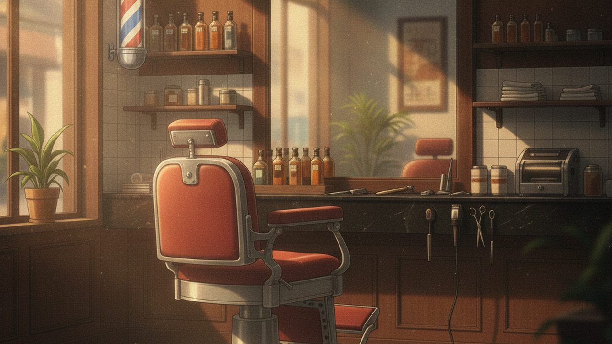
暗い店内にサインポールの灯り。ロゴをふわっと表示してスタート。
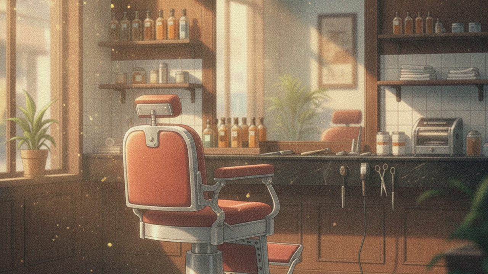
朝の光が差すバーバーチェア。舞う埃がきらめく、静かで美しい“整う”空間。
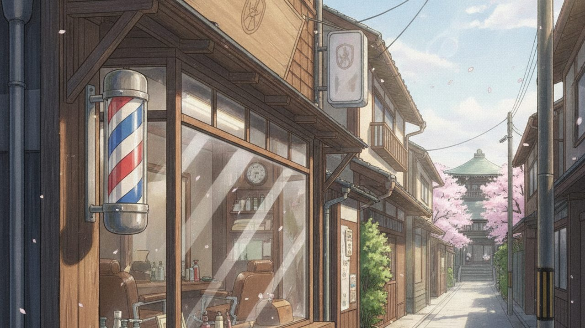
サインポールが回る外観。老舗 × 若手オーナーの「らしさ」を冒頭で提示。
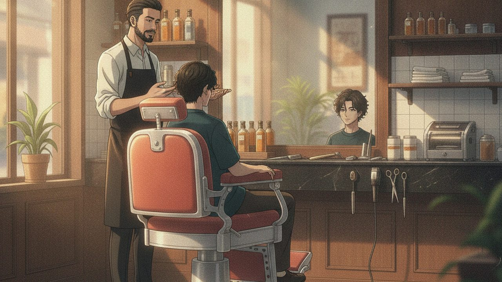
オーナーが鏡前で丁寧にカウンセリング。信頼感のある導入。
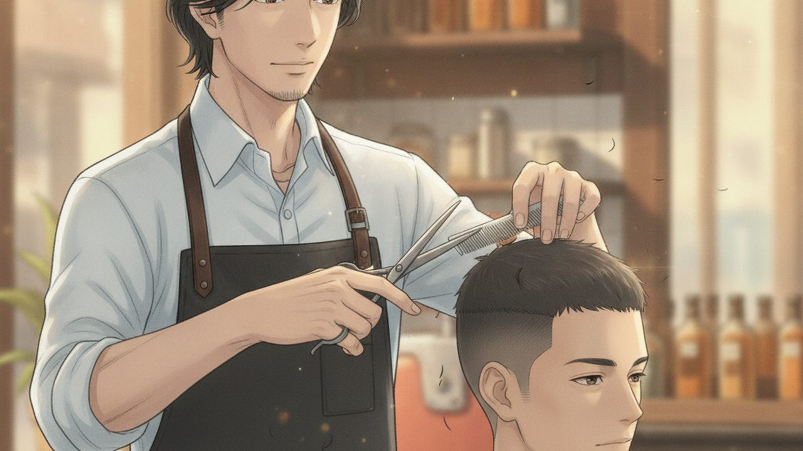
シザーの手元アップ。舞う毛、金属の煌めき。技術力を映像で証明。
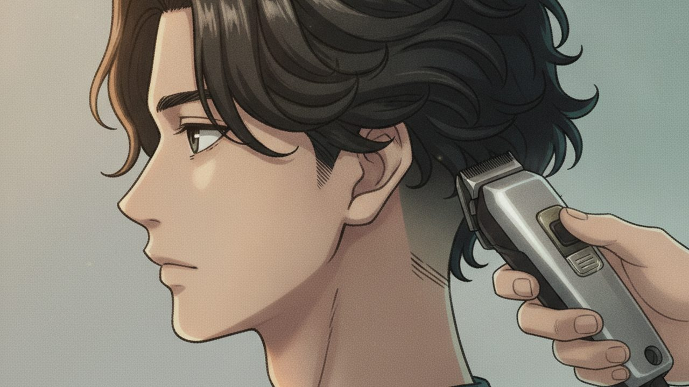
20代のお客様のサイド。バリカンでフェードのグラデを刻む。
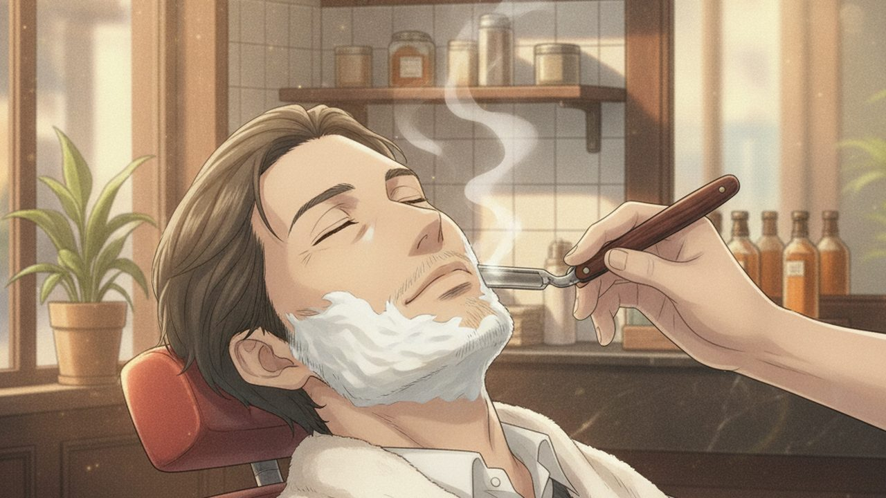
40代のお客様。熱いタオル→レザーシェービング。湯気が立つ名シーン。
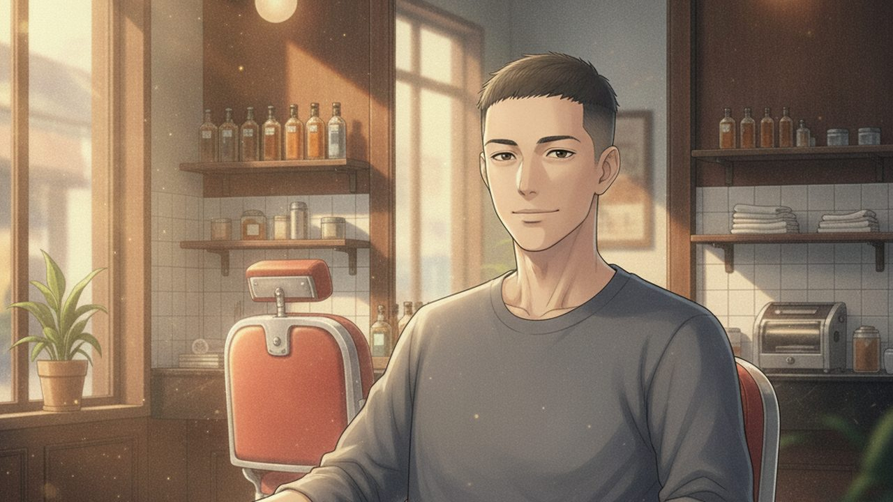
鏡の中の仕上がったフェード。凛とした“新しい自分”。夕方の暖色光。
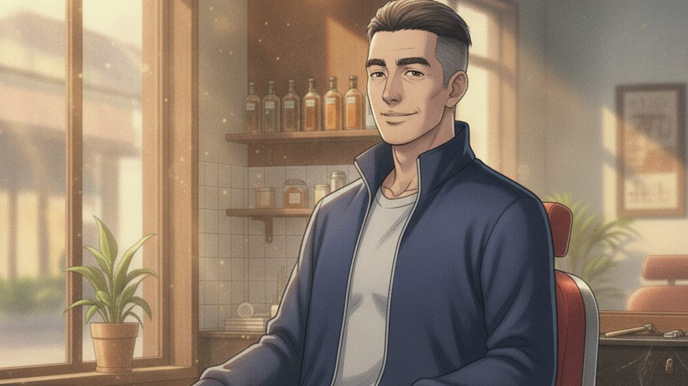
整った無造作ショート。落ち着いた渋さ。年を重ねるほど似合う。
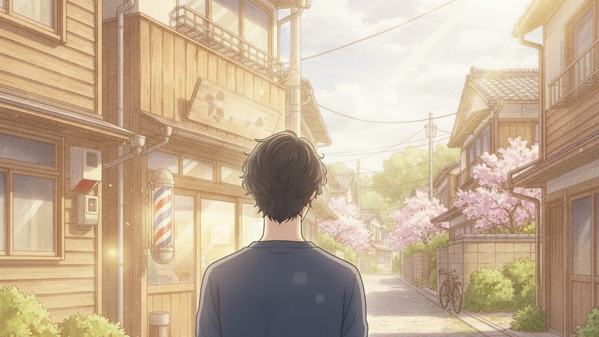
お客様が店を出る後ろ姿。夕暮れの街、サインポールの灯り。爽快感。
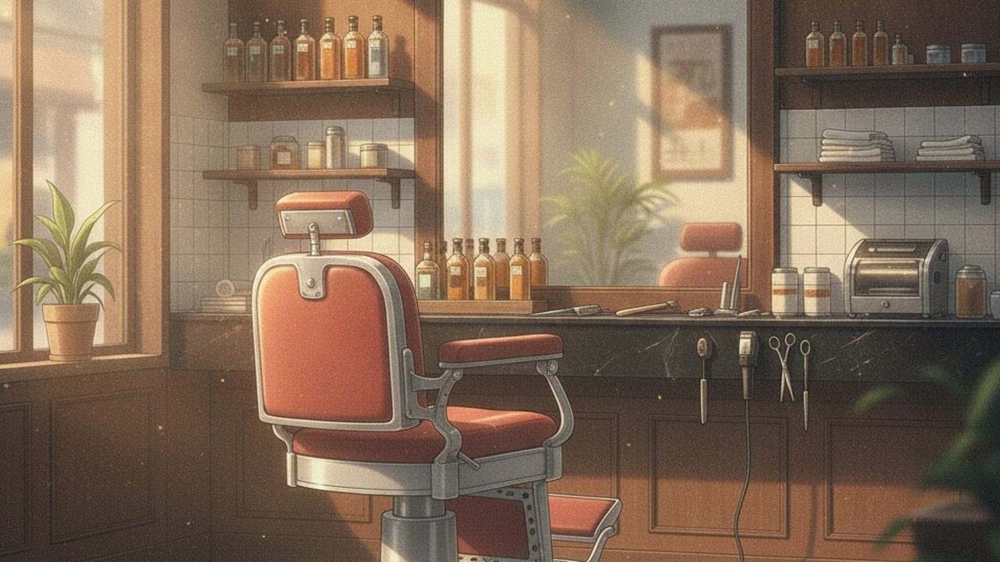
バーバーチェアと鏡の象徴カット。夕光に包まれた静かな店内。
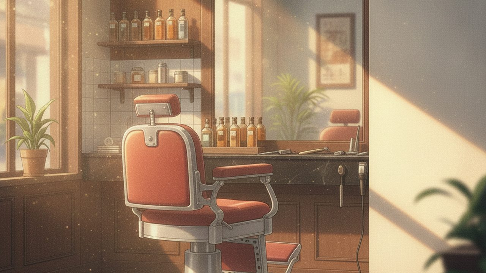
右側の余白に「三浦理容室ロゴ＋公式LINE QR」を重ねる予定。住所・電話は出しません。